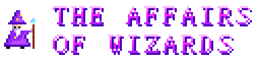
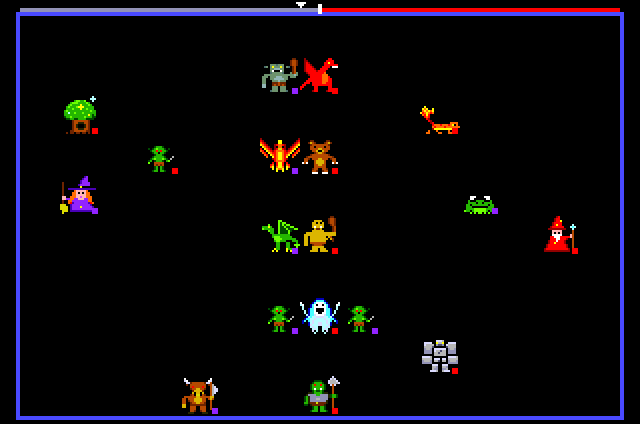

Two to eight wizards
Play against friends round one Next, against the computer, or both. Pick each wizard's name, look and robe colour. A look-away screen keeps each player's spell book secret.

A wizard battle for the ZX Spectrum Next. Do not meddle.
Summon. Bluff. Be the last wizard standing. Up to eight wizards meet in an arena with a book of spells each. Call up dragons and goblins, plant enchanted woods, raise the dead, and cast creatures that may not be real at all. Every other wizard wants you gone.

Features
Play against friends round one Next, against the computer, or both. Pick each wizard's name, look and robe colour. A look-away screen keeps each player's spell book secret.
Put wizards on teams, so a parent and child can take on the computer together. Give younger players stars for better odds and a bigger spell book.
Kit out a wizard in full and they become a golden champion. Raise a dragon, fell a giant with a goblin, or win by pure illusion. Every trophy is kept on the SD card, with the name of the first wizard to win it.
Fight on plain black, as in 1985, or under twinkling stars, on flagstones, sand, grass, ice or a giant chessboard.
Play with the full set of spells and creatures, or switch to Classic for just the 1985 originals.
Point at an enemy before you strike and the game tells you your chance to win.
Over fifty spells, dealt at random. Make the best of what you get: no two battles play the same.
Any creature can be cast as an illusion. Illusions always work, but one Disbelieve makes them vanish. Bluff, or call the bluff.
Every spell that works tips the world towards Law or Chaos, and a meter above the arena shows the tug-of-war. Spells on the winning side get easier; the other side's get harder.
Goblins, elves, bears, ogres, eagles and a red dragon. The undead can only be hurt by magic or by other undead.
A troll that regrows, a phoenix reborn from fire, a banshee whose scream freezes, a salamander that leaves flames, a walking tree and more.
Summon a horse, unicorn, pegasus or gryphon and climb on. Shelter in a magic castle until it crumbles.
Plant enchanted woods, build walls, sink the ground into swamp, and loose gooey blobs and magic fire that spread every round. Or shake it all down with an earthquake.
Fallen creatures leave their bodies where they fall. The right spell brings them back, on your side.
Magic swords, armour, wings, a bow, and Shadow Form. Teleport out of trouble, turn an enemy into a frog, or steal a spell from their book.
Full-colour pictures on the Next's high-resolution screen, written from scratch in Z80 assembly.
A few names unlock something special. And sit in an enchanted tree long enough and it may teach you a spell nobody else can get.
Screens
Click a picture to see it bigger.
How to play
| Q A O P | Move the cursor up, down, left and right, or pick from a list. A joystick works too. |
| SPACE | Choose: cast the spell, pick the piece or square |
| 0 / ENTER | Done: skip a spell, stop moving, end your turn |
| I | Read about a spell in your book |
| Y / N | Answer a question, like casting a creature as an illusion |
| N | When moving: jump to your next piece that hasn't moved |
| T H R | On the setup screen: a wizard's team, handicap stars, and Classic or Next rules |
| F D V | On the setup screen: the arena floor, free Disbelieve on or off, and the trophy cabinet |
| M | Music off or on, any time |
| S | The wizards' voices off or on, any time |
Be the last wizard alive. When a wizard falls, everything they summoned goes with them.
Every wizard chooses a spell in secret. Then the spells are cast, one wizard at a time. Then each wizard moves their creatures and themselves, and fights.
Move into an enemy to attack it: your combat against its defence, plus a roll each. Some creatures fly over the others, and some shoot from afar. Next to an enemy, you may be stuck fighting it.
On the setup screen, choose how many wizards there are and whether each is a human or the computer (SPACE: Computer, Easy or Hard). Give them a name with ENTER, a look with O/P and a robe colour with C. Pick a floor with F, and with D let Disbelieve come free with your spell each round (a house rule; off is the 1985 way). Then press 0 to begin. After a battle, SPACE plays again with the same wizards and 0 goes back to setup.
Tips
affairs-of-wizards.nex to your SD card. Pick it in the Browser and press ENTER..nex file in CSpect. In CSpect, Escape closes the emulator: start it with -esc to stop that.Changelog
Coming next